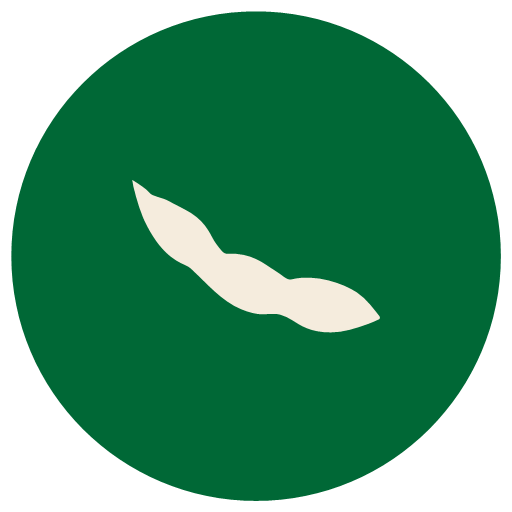

LA TARTÈ
The taste you need.
Barazimi ditor
Hyr në aplikacion
Shtoje në ekranin kryesor të iPhone-it
- Prek butonin Share (katrori me shigjetë lart).
- Zgjidh Add to Home Screen.
- Prek Add. Ikona do të jetë logoja e La Tarte.
Shtoje në ekranin kryesor
- Prek ⋮ lart djathtas në Chrome.
- Zgjidh Add to Home screen (ose Install app).
- Prek Add.